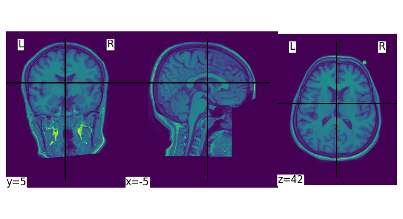

Loading Anatomical MRI data with NiBabel¶
[1]:
import nibabel as nib
import nilearn as nil
from almirah import Layout
[2]:
lay = Layout(root="/path/to/data", specification_name="bids")
lay
[2]:
<Layout root: '/path/to/data'>
[5]:
files = lay.query(datatype="anat", extension=".nii.gz")
[10]:
file = lay.query(subject="D0020", datatype="anat", suffix="T1w", extension=".nii.gz")[0]
print(file.rel_path)
sub-D0020/ses-101/anat/sub-D0020_ses-101_T1w.nii.gz
[12]:
file.download()
get(ok): sub-D0020/ses-101/anat/sub-D0020_ses-101_T1w.nii.gz (file) [from origin...]
[15]:
raw = nib.load(file.path)
type(raw)
[15]:
nibabel.nifti1.Nifti1Image
[16]:
print(raw.header)
<class 'nibabel.nifti1.Nifti1Header'> object, endian='<'
sizeof_hdr : 348
data_type : b''
db_name : b''
extents : 0
session_error : 0
regular : b'r'
dim_info : 54
dim : [ 3 192 256 256 1 1 1 1]
intent_p1 : 0.0
intent_p2 : 0.0
intent_p3 : 0.0
intent_code : none
datatype : int16
bitpix : 16
slice_start : 0
pixdim : [1. 1. 1. 1. 0.0064721 0. 0.
0. ]
vox_offset : 0.0
scl_slope : nan
scl_inter : nan
slice_end : 0
slice_code : unknown
xyzt_units : 10
cal_max : 0.0
cal_min : 0.0
slice_duration : 0.0
toffset : 0.0
glmax : 0
glmin : 0
descrip : b'TE=2.9;Time=103137.087'
aux_file : b''
qform_code : scanner
sform_code : scanner
quatern_b : 0.0
quatern_c : -0.018800024
quatern_d : 0.0
qoffset_x : -95.44943
qoffset_y : -132.33757
qoffset_z : -134.27122
srow_x : [ 9.9929786e-01 0.0000000e+00 -3.7593402e-02 -9.5449432e+01]
srow_y : [ 0. 1. 0. -132.33757]
srow_z : [ 3.7593581e-02 0.0000000e+00 9.9929309e-01 -1.3427122e+02]
intent_name : b''
magic : b'n+1'
[17]:
raw_data = raw.get_fdata()
type(raw_data)
[17]:
numpy.ndarray
[18]:
raw_data.shape
[18]:
(192, 256, 256)
[20]:
from nilearn import plotting
plotting.plot_img(raw)
[20]:
<nilearn.plotting.displays._slicers.OrthoSlicer at 0x310f73b30>
